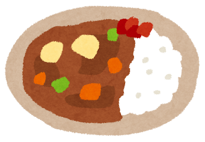

<DOCTYPE html>
<html>
    <head>
        <meta charset="UTF-8">
        <title>Curry</title>
    </head>
    <body>
        <h1>Curry</h1>
        
        <h2>説明</h2>
        <p>肉・野菜をいため、カレー粉などで味つけして煮こんだものを、飯にかけて食べる日本の料理。ライスカレー。</p>
        <h2>材料</h2>
        <ul>
            <li>ご飯</li>
            <li>牛肉</li>
            <li>玉ねぎ</li>
            <li>ジャガイモ</li>
            <li>にんじん</li>
            <li>カレールー</li>
        </ul>
        <h2>手順</h2>
        <ol>
            <li>野菜（玉ねぎ・にんじん・じゃがいも）を切る</li>
            <li>肉（豚肉や牛肉など）を切る</li>
            <li>鍋で肉と野菜を炒める</li>
            <li>水を加えて煮る</li>
            <li>アクを取る</li>
            <li>野菜が柔らかくなるまで煮る</li>
            <li>火を止めてカレールーを入れる</li>
            <li>ルーが溶けたら再度弱火でとろみが出るまで煮る</li>
            <li>完成・ご飯と一緒に盛りつける</li>
        </ol>
        <a href="../index.html">Home</a>
    </body>
</html>